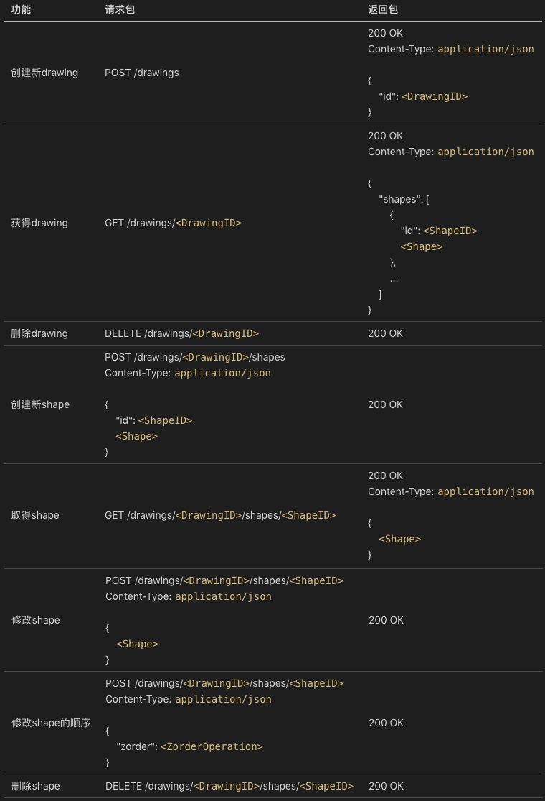

- 00 开篇词 怎样成长为优秀的软件架构师？.md.html
- 01 架构设计的宏观视角.md.html
- 02 大厦基石：无生有，有生万物.md.html
- 03 汇编：编程语言的诞生.md.html
- 04 编程语言的进化.md.html
- 05 思考题解读：如何实现可自我迭代的计算机？.md.html
- 06 操作系统进场.md.html
- 07 软件运行机制及内存管理.md.html
- 08 操作系统内核与编程接口.md.html
- 09 外存管理与文件系统.md.html
- 10 输入和输出设备：交互的演进.md.html
- 11 多任务：进程、线程与协程.md.html
- 12 进程内协同：同步、互斥与通讯.md.html
- 13 进程间的同步互斥、资源共享与通讯.md.html
- 14 IP 网络：连接世界的桥梁.md.html
- 15 可编程的互联网世界.md.html
- 16 安全管理：数字世界的守护.md.html
- 17 架构：需求分析 (上).md.html
- 18 架构：需求分析 (下) · 实战案例.md.html
- 19 基础平台篇：回顾与总结.md.html
- 20 桌面开发的宏观视角.md.html
- 21 图形界面程序的框架.md.html
- 22 桌面程序的架构建议.md.html
- 23 Web开发：浏览器、小程序与PWA.md.html
- 24 跨平台与 Web 开发的建议.md.html
- 25 桌面开发的未来.md.html
- 26 实战（一）：怎么设计一个“画图”程序？.md.html
- 27 实战（二）：怎么设计一个“画图”程序？.md.html
- 28 实战（三）：怎么设计一个“画图”程序？.md.html
- 29 实战（四）：怎么设计一个“画图”程序？.md.html
- 30 实战（五）：怎么设计一个“画图”程序？.md.html
- 31 辅助界面元素的架构设计.md.html
- 32 架构：系统的概要设计.md.html
- 33 桌面开发篇：回顾与总结.md.html
- 34 服务端开发的宏观视角.md.html
- 35 流量调度与负载均衡.md.html
- 36 业务状态与存储中间件.md.html
- 37 键值存储与数据库.md.html
- 38 文件系统与对象存储.md.html
- 39 存储与缓存.md.html
- 40 服务端的业务架构建议.md.html
- 41 实战（一）：“画图”程序后端实战.md.html
- 42 实战（二）：“画图”程序后端实战.md.html
- 43 实战（三）：“画图”程序后端实战.md.html
- 44 实战（四）：“画图”程序后端实战.md.html
- 45 架构：怎么做详细设计？.md.html
- 46 服务端开发篇：回顾与总结.md.html
- 47 服务治理的宏观视角.md.html
- 48 事务与工程：什么是工程师思维？.md.html
- 49 发布、升级与版本管理.md.html
- 50 日志、监控与报警.md.html
- 51 故障域与故障预案.md.html
- 52 故障排查与根因分析.md.html
- 53 过载保护与容量规划.md.html
- 54 业务的可支持性与持续运营.md.html
- 55 云计算、容器革命与服务端的未来.md.html
- 56 服务治理篇：回顾与总结.md.html
- 57 心性：架构师的修炼之道.md.html
- 58 如何判断架构设计的优劣？.md.html
- 59 少谈点框架，多谈点业务.md.html
- 60 架构分解：边界，不断重新审视边界.md.html
- 61 全局性功能的架构设计.md.html
- 62 重新认识开闭原则 (OCP).md.html
- 63 接口设计的准则.md.html
- 64 不断完善的架构范式.md.html
- 65 架构范式：文本处理.md.html
- 66 架构老化与重构.md.html
- 67 架构思维篇：回顾与总结.md.html
- 68 软件工程的宏观视角.md.html
- 69 团队的共识管理.md.html
- 70 怎么写设计文档？.md.html
- 71 如何阅读别人的代码？.md.html
- 72 发布单元与版本管理.md.html
- 73 软件质量管理：单元测试、持续构建与发布.md.html
- 74 开源、云服务与外包管理.md.html
- 75 软件版本迭代的规划.md.html
- 76 软件工程的未来.md.html
- 77 软件工程篇：回顾与总结.md.html
- 加餐 如何做HTTP服务的测试？.md.html
- 加餐 实战：“画图程序” 的整体架构.md.html
- 加餐 怎么保障发布的效率与质量？.md.html
- 热点观察 我看Facebook发币（上）：区块链、比特币与Libra币.md.html
- 热点观察 我看Facebook发币（下）：深入浅出理解 Libra 币.md.html
- 用户故事 站在更高的视角看架构.md.html
- 答疑解惑 想当架构师，我需要成为“全才”吗？.md.html
- 结束语 放下技术人的身段，用极限思维提升架构能力.md.html
- 课外阅读 从《孙子兵法》看底层的自然法则.md.html
- 捐赠
29 实战（四）：怎么设计一个“画图”程序？
你好，我是七牛云许式伟。
今天继续我们的画图程序。上一讲完成后，我们的画图程序不只是功能实用，并且还支持了离线编辑与存储。
今天我们开始考虑服务端。
我们从哪里开始？
第一步，我们要考虑的是网络协议。
网络协议
为了简化，我们暂时不考虑多租户带授权的场景。后面我们在下一章服务端开发篇会继续实战这个画图程序，将其改造为多租户。
在浏览器中，一个浏览器的页面编辑的是一个文档，不同页面编辑不同的文档。所以在我们的浏览器端的 dom.js 里面，大家可以看到，我们的 DOM 模型是单文档的设计。
但显然，服务端和浏览器端这一点是不同的，就算没有多租户，但是多文档是跑不了的。我们不妨把 QPaint 的文档叫drawing，如此服务端的功能基本上是以下这些：
- 创建新 drawing 文档；
- 获取 drawing 文档；
- 删除 drawing 文档；
- 在 drawing 文档中创建一个新 shape；
- 取 drawing 文档中的一个 shape；
- 修改 drawing 文档中的一个 shape，包括移动位置、修改图形样式；
- 修改 drawing 文档中的一个 shape 的 zorder 次序（浏览器端未实现）；
- 删除 drawing 文档的一个 shape。
完整的网络协议见下表：

其中<Shape>是这样的：
"path": {
"points": [
{"x": <X>, "y": <Y>},
...
],
"close": <Boolean>,
"style": <ShapeStyle>
}
或:
"line": {
"pt1": {"x": <X>, "y": <Y>},
"pt2": {"x": <X>, "y": <Y>},
"style": <ShapeStyle>
}
或：
"rect": {
"x": <X>,
"y": <Y>,
"width": <Width>,
"height": <Height>,
"style": <ShapeStyle>
}
或：
"ellipse": {
"x": <X>,
"y": <Y>,
"radiusX": <RadiusX>,
"radiusY": <RadiusY>,
"style": <ShapeStyle>
}
其中<ShapeStyle>是这样的：
{
"lineWidth": <Width>, // 线宽
"lineColor": <Color>, // 线型颜色
"fillColor": <Color> // 填充色
}
其中<ZorderOperation>可能的值为：
- “top”: 到最顶
- “bottom”: 到最底
- “front”: 往前一层
- “back”: 往后一层
整体来说，这套网络协议比较直白体现了其对应的功能含义。我们遵循这样一套网络协议定义的范式：
- 创建对象：POST /objects
- 修改对象：POST /objects/
<ObjectID> - 删除对象：DELETE /objects/
<ObjectID> - 查询对象：GET /objects/
<ObjectID>
其实还有一个列出对象，只不过我们这里没有用到：
- 列出所有对象：GET /objects
- 列出符合条件的对象：GET /objects?key=value
另外，有一个在网络设计时需要特别注意的点是：对重试的友好性。
为什么我们必须要充分考虑重试的友好性？因为网络是不稳定的。这意味着，在发生一次网络请求失败时，在一些场景下你不一定能确定请求的真实状态。
在小概率的情况下，有可能服务端已经执行了预期的操作，只不过返还给客户端的时候网络出现了问题。在重试时你以为只是重试，但实际上是同一个操作执行了两遍。
所谓重试的友好性，是指同一个操作执行两遍，其执行结果和只执行一遍一致。
只读操作，比如查询对象或列出对象，毫无疑问显然是重试友好的。
创建对象（POST /objects）往往容易被实现为重试不友好的，执行两遍会创建出两个对象来。我们对比一下这里创建新drawing和创建新shape的差别：
POST /drawings
POST /drawings/<DrawingID>/shapes
Content-Type: application/json
{
"id": <ShapeID>,
<Shape>
}
可以看到，创建新 shape 时传入了 ShapeID，也就是说是由客户（浏览器端）分配 ShapeID。这样做的好处是如果上一次服务端已经执行过该对象的创建，可以返回对象已经存在的错误（我们用 status = 409 冲突来表示）。
而创建新 drawing 并没有传入什么参数，所以不会发生什么冲突，重复调用就会创建两个新 drawing 出来。
通过以上分析，我们可以认为：创建新 shape 是重试友好的，而创建 drawing 不是重试友好的。那么怎么解决这个问题？有这么几种可能：
- 客户端传 id（和上面创建新 shape 一样）；
- 客户端传 name；
- 客户端传 uuid。
当然这三种方式本质上的差别并不大。比如客户端传 name，如果后面其他操作引用时用的也是 name，那么本质上这个 name 就是 id。
传 uuid 可以认为是一种常规重试友好的改造手法。这里 uuid 并没有实际含义，你可以理解为它是 drawing 的唯一序列号，也可以理解为网络请求的唯一序列号。当然这两种不同理解的网络协议表现上会略有不同，如下：
POST /drawings
Content-Type: application/json
{
"uuid": <DrawingUUID>
}
POST /drawings
Content-Type: application/json
X-Req-Uuid: <RequestUUID>
修改对象和删除对象，往往是比较容易做到重试友好。但这并不绝对，比如我们这个例子中 “修改shape的顺序”，它的网络协议是这样的：
POST /drawings/<DrawingID>/shapes/<ShapeID>
Content-Type: application/json
{
"zorder": <ZorderOperation>
}
其中<ZorderOperation>可能的值为：
- “top”: 到最顶
- “bottom”: 到最底
- “front”: 往前一层
- “back”: 往后一层
在 ZorderOperation 为 “front” 或 “back” 时，重复执行两遍就会导致 shape 往前（或往后）移动 2 层。
怎么调整？
有两个办法。一个方法是把修改操作用绝对值表示，而不是相对值。比如 ZorderOperation 为 “front” 或 “back” 是相对值，但是 Zorder = 5 是绝对值。
另一个方法是通用的，就是用请求的序列号（RequestUUID），这个方法在上面创建新 drawing 已经用过了，这里还可以用：
POST /drawings/<DrawingID>/shapes/<ShapeID>
Content-Type: application/json
X-Req-Uuid: <RequestUUID>
{
"zorder": <ZorderOperation>
}
当然用请求序列号是有额外代价的，因为这意味着服务端要把最近执行成功的所有的请求序列号（RequestUUID）记录下来，在收到带请求序列号的请求时，检查该序列号的请求是否已经成功执行，已经执行过就报冲突。
在网络协议的设计上，还有一个业务相关的细节值得一提。
细心的你可能留意到，我们 Shape 的 json 表示，在网络协议和 localStorage 存储的格式并不同。在网络协议中是：
{
"id": <ShapeID>,
"path": {
"points": [
{"x": <X>, "y": <Y>},
...
],
"close": <Boolean>,
"style": <ShapeStyle>
}
}
而在 localStorage 中的是：
{
"type": "path",
"id": <ShapeID>,
"points": [
{"x": <X>, "y": <Y>},
...
],
"close": <Boolean>,
"style": <ShapeStyle>
}
从结构化数据的 Schema 设计角度，localStorage 中的实现是无 Schema 模式，过于随意。这是因为 localStorage 只是本地自己用的缓存，影响范围比较小，故而我们选择了怎么方便怎么来的模式。而网络协议未来有可能作为业务的开放 API ，需要严谨对待。
版本升级
另外，这个画图程序毕竟只是一个 DEMO 程序，所以还有一些常见网络协议的问题并没有在考虑范围之内。
比如从更长远的角度，网络协议往往还涉及协议的版本管理问题。网络协议是一组开放 API 接口，一旦放出去了就很难收回，需要考虑协议的兼容。
为了便于未来协议升级的边界，很多网络协议都会带上版本号。比如：
POST /v1/objects
POST /v1/objects/<ObjectID>
DELETE /v1/objects/<ObjectID>
GET /v1/objects/<ObjectID>
GET /v1/objects?key=value
在协议发生了不兼容的变更时，我们会倾向于升级版本，比如升为 v2 版本：
POST /v2/objects
POST /v2/objects/<ObjectID>
DELETE /v2/objects/<ObjectID>
GET /v2/objects/<ObjectID>
GET /v2/objects?key=value
这样做有这么一些好处：
- 可以逐步下线旧版本的流量，一段时间内让两个版本的协议并存；
- 可以新老版本的业务服务器相互独立，前端由 nginx 或其他的应用网关来分派。
第一个实现版本
聊完了网络协议，我们就要开始考虑服务端的实现。在选择第一个实现版本怎么做时，有这样几种可能性。
第一种，当然是常规的憋大招模式。直接做业务架构设计、架构评审、编码、测试，并最后上线。
第二种，是做一个 Mock 版本的服务端程序。
两者有什么区别？
区别在于，服务端程序从架构设计角度，就算是非业务相关的通用型问题也是很多的，比如高可靠和高可用。
高可靠是指数据不能丢。就算服务器的硬盘坏了，数据也不能丢。这还没什么，很多服务甚至要求，在机房层面出现大面积事故比如地震，也不能出现数据丢失。
高可用是指服务不能存在单点故障。任何一台甚至几台服务器停机了，用户还要能够正常访问。一些服务比如支付宝，甚至要求做到跨机房的异地双活。在一个机房故障时，整个业务不能出现中断。
在没有好的基础设施下，要做好一个好的服务端程序并不那么容易。所以另一个选择是先做一个 Mock 版本的服务端程序。
这不是增加了工作量？有什么意义？
其一，是让团队工作并行。不同团队协作的基础就是网络协议。一个快速被打造的 Mock 的最小化版本服务端，可以让前端不用等待后端。而后端则可以非常便捷地自主针对网络协议进行单元测试，做很高的测试覆盖率以保证质量，进度不受前端影响。
其二 ，是让业务逻辑最快被串联，快速验证网络协议的有效性。中途如果发现网络协议不满足业务需求，可以及时调整过来。
所以我们第一版的服务端程序，是 Mock 的版本。Mock 版本不必考虑太多服务端领域的问题，它的核心价值就是串联业务。所以 Mock 版本的服务器甚至不需要依赖数据库，直接所有的业务逻辑基于内存中的数据结构就行。
代码如下：
正式版画图程序的服务端，我们会在后面服务端开发一章的实战中继续去完成。
从架构角度来说，这个 paintdom 程序分为两层：Model 层和 Controller 层。
我们首先看一下 Model 层。它的源代码是：
Model 层与网络无关，有的只是纯纯粹粹的业务核心逻辑。它实现了一个多文档版本的画图程序，逻辑结构也是一棵 DOM 树，只不过比浏览器端多了一层：
- Document => Drawing => Shape => ShapeStyle
浏览器端的 QPaintDoc，对应的是这里的 Drawing，而不是这里的 Document。
我们再来看一下 Controller 层。它的源代码是：
Controller 层实现的是网络协议。你可能觉得奇怪，我为什么会把网络协议层看作 Controller 层，那么 MVC 中 View 层去了哪里。
首先服务端程序大部分情况下并不需要显示模块，所以不存在 View 层。网络协议层为什么可以看作 Controller 层，是因为它负责接受用户输入。只不过用户输入不是我们日常理解的用户交互，而是来自某个自动化控制（Automation）程序的 API 请求。
虽然这个 paintdom 程序的实现，有一些 Go 语言相关的知识点是挺值得讲的，尤其是网络协议实现相关的部分。不过我这里就不做展开了，感兴趣的同学可以自行学习一下 Go 语言。
总体来说，业务逻辑相关的部分理解起来相对容易，我们这里不再赘述。
结语
今天我们重点讨论了 “画图” 程序的网络协议，给出了常规网络协议设计上的一些考量点。网络协议的地位非常关键，它是一个 B/S 或 C/S 程序前后端耦合的使用界面，因而也是影响团队开发效率的关键点。
如何及早稳定网络协议？如何及早让前端程序员可以与服务端联调？这些都是我们应该重点关注的地方。
定义清楚网络协议后，我们给出了满足我们定义的网络协议的第一个服务端实现版本 paintdom 程序，用于串联业务逻辑。这个实现版本是 Mock 程序，它只关注业务逻辑，不关心服务端程序的固有的高可靠、高可用等需求。后续在下一章服务端开发中，我们会继续迭代它。
如果你对今天的内容有什么思考与解读，欢迎给我留言，我们一起讨论。下一讲我们会把这个 paintdom 服务端程序，和我们的 paintweb 画图程序串联起来。
如果你觉得有所收获，也欢迎把文章分享给你的朋友。感谢你的收听，我们下期再见。
© 2019 - 2023 Liangliang Lee. Powered by gin and hexo-theme-book.